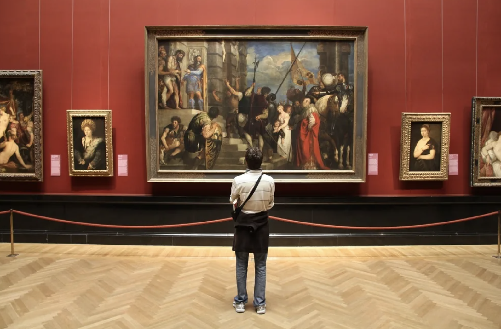
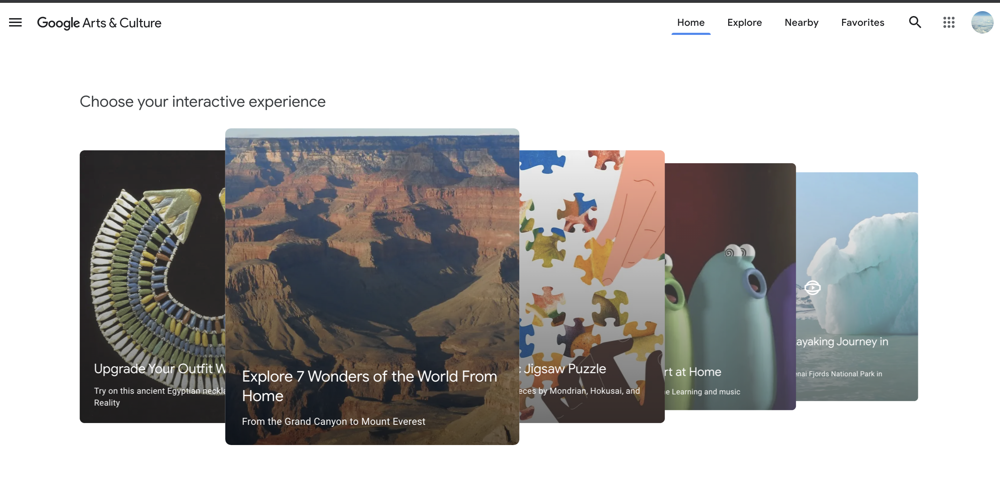

Invisioning Future Museums

I love museums. I'm not an art history expert, but there is something about
steppping into a museum or an art gallery that makes me feel stimulated
by the creative ideas and free expressions roaming around me on the walls of this place.
Though I can't exactly pinpoint what it is I love about art, I love the process of
understand something about an artwork that I've never seen before,
peering at the descriptions, looking at
the intimate brushstorkes, and trying to understand intention behind the art.
With whatever understanding I get from it I try to relate it to my life, leaving a
small piece of it in my heart.
However, I know that not all people have the same experience as I do when
encountering artwork at a museum. And, I believe that it's not their fault.
The Problem with Museums Today
The above is a video taken in front of the Mona Lisa on my visit to Paris 2019. I could barely get a look at Mona Lisa and at the end I gave up trying. Somehow even if I succeeded in weezing myself up to the front, I doubted that could have a single intimate moment with the painting.
I think the biggest problem that we have with museums today is that:
- They are just too much people you can barely look at the picture.
- The interior of museums pays no attention to the physical tiredness, legs hurt, I need to sit!
- No discussions, questions, sharing of ideas
- Lack of intimate interaction with the painting
As a museum lover who has been to quite a few art gallieries around the world, here is what I think the future of art museums should gear towards.
Future Museums with Holograms and Virtual Reality

Like the Google Art and Culture website above, most of today's explorations in making museums more tech orientated is
focused around virtual tours of museums, tech art, and organizing art collections
digitally.
My exploration here is different in that it studies the current problems we
have with museums today and tries to enhance the experience that people have when visiting art galleries
with the assistance of technology.
I'm saying that we need to move away from the uncomfortable
headphones and squinting small descriptions of the artwork and
creating a more immersive and interactive experience with experiencing art.
so my main question is?